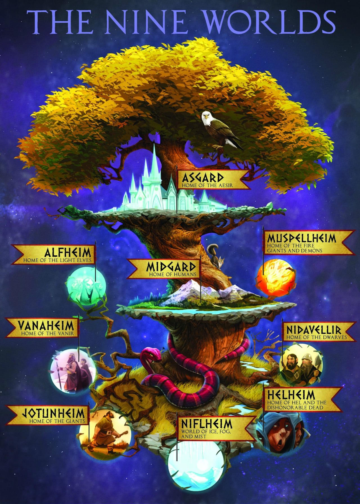

NORDIC
Norse mythology is full of fascinating stories and complex characters. It’s no wonder that it has seen a resurgence in popularity in recent years, from Marvel’s Thor movies to Neil Gaiman’s American Gods (the book and the TV series) to Rick Riordan’s Magnus Chase series.
The story of Gylfaginning begins with King Gylfi of Sweden travelling to Ásgarðr (Asgard) disguised
as an old man named “Gangleri” to ask the Æsir questions about the universe.
He meets Óðinn (Odin), who is also disguised and presents himself as as three kings named “Hárr”
(High), “Jafnhárr” (Just-as-High) and “Þriði” (Third). Gylfi asks permission to ask his questions
and Odin replies:
“Stand forward while you inquire;
The one who recounts shall sit.”
While we won’t insist that you stand while reading this blog post, we will hopefully answer any
questions that you may have about Norse mythology.
The nine worlds of Norse mythology
The Norse universe consists of nine worlds. These worlds are only referenced a few times throughout the myths and are not specified, but are thought to be (in no particular order) Asgard, Vanaheimr (Vanaheim), Jötunheimr (Jotunheim), Niflheim, Muspelheim, Álfheimr (Alfheim), Svartálfaheimr (Svartalfheim), Niðavellir (Nidavellir), and Miðgarðr (Midgard) which is our world.
These worlds are connected by a great ash tree named Yggdrasil, which runs through the centre of the universe. An eagle lives at the top of Yggdrasil, while the dragon Niðhöggr (Nidhogg) lives at the bottom and chews on its roots. The squirrel Ratatosk runs up and down Yggdrasil’s trunk, carrying messages between these two creatures – and they’re not particularly nice messages either.
In addition to holding everything together, Yggdrasil is also a source of wisdom and is where the Æsir often gather for meetings. At the foot of the tree is Urðarbrunnr (Urd’s well), which is associated with the three Norns or “fates”.
Under another root is Mímisbrunnr (Mímir’s well), which is where Odin gave up his eye as payment for a drink in order to gain the well’s knowledge. It is also thought that Yggdrasil is the tree that Odin hung himself on, again in the pursuit of knowledge.
